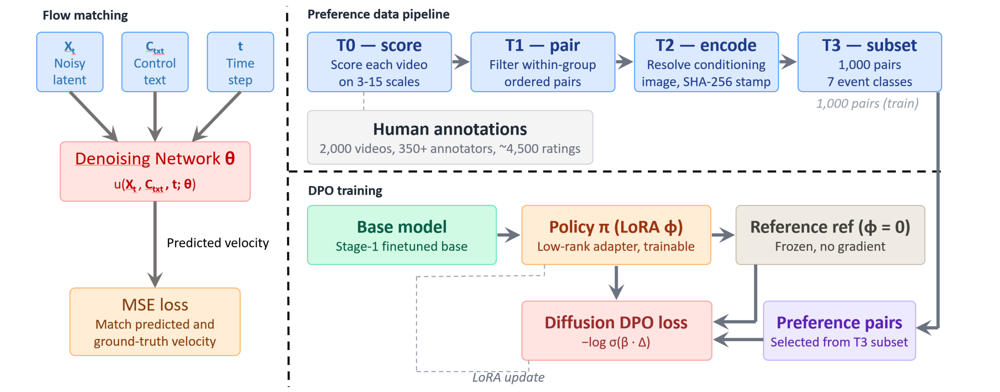

PhyWorld is post-trained from Wan2.2-I2V-A14B in two stages. Stage 1 enhances physical consistency through flow-matching fine-tuning on a video-to-video continuation pipeline. Stage 2 enforces physical laws through reinforcement learning with Direct Preference Optimization (DPO), using human-annotated preference pairs drawn directly from the PhyGround evaluation pool.

Stage 1 Physical Consistency Enhancement
Video-to-video continuation with Wan-VAE conditioning, a binary mask delimiting preserved vs. synthesised frames, and a CLIP global-context embedding injected via decoupled cross-attention. The DiT is trained with rectified-flow matching on OpenVid-1M clips, filtered for inter-frame CLIP cosine similarity and per-clip optical-flow magnitude, yielding smooth, motion-controlled supervision.
Stage 2 Physics Enforcement via DPO
A rank-16 LoRA adapter is wrapped around the Wan2.2 denoiser's attention and feed-forward projections. Preference pairs are derived from PhyGround human ratings: within-prompt winner/loser pairs with score margin ≥ 1.0. A class-balanced 1,000-pair trainset spans seven physical-event classes; DPO is restricted to the high-noise window t ∈ [901, 999] with β = 100 to suppress reward hacking.
Preference data, grounded in PhyGround
Stage 2 reuses the 2,000 human-rated videos behind the PhyGround benchmark (~350 raters, ~4,500 cleaned annotations on a 1–5 Likert scale across semantic alignment, physical-temporal validity, and persistence). Pairs are produced by a four-stage content-addressed pipeline (T0 score → T1 pair → T2 encode → T3 subset), with a 42-prompt holdout reserved for validation. The final trainset contains 1,000 pairs over 208 conditioning-image groups, class-balanced over collision / rebound, destruction / deformation, fluids, shadow / reflection, chain / multi-stage, rolling / sliding, and throwing / ballistic events.
Evaluation protocol
We evaluate generation quality with 500 random prompts from VBench at 480p, reporting subject consistency, background consistency, motion smoothness, dynamic degree, aesthetic quality, and imaging quality. For physical faithfulness we use PhyGround's 250-prompt TI2V benchmark and its released PhyJudge-9B judge model under deterministic decoding, with semantic alignment (SA), physical-temporal validity (PTV), and persistence as general dimensions, and solid-body, fluid, and optical pools as per-domain physics scores.